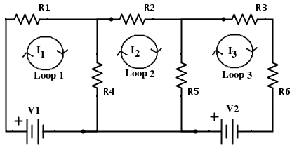

In this lesson we will look at Mesh Analysis of circuits. There are three steps to the progess that need to be worked through;
1. Assign mesh currents to all of the meshes in the circuit.
2. Apply Kirchhoff's Voltage Law to each mesh and apply Ohm's Law to determine the voltages with the mesh currents.
3. Solve the resulting simultaneous equation.
Firstly, Kirchhoff's Voltage Law states that in any complete loop within a circuit, the sum of all voltages across components which supply electrical energy must equal the sum of all voltages across the other components in the same loop.
Secondly, Ohm's Law states that the current through a conductor between two points is directly proportional to the voltage across the two points. Introducing the constant of proportionality, the resistance, one arrives at the usual mathematical equation that describes this relationship I = V / R.

Looking at Loop One, we can see the current is going from the positive end of the cell clockwise around the loop with the current passes through R1 and R4. However we need to also look at Loop Two as it shares a resistor (R4) with Loop One. As we can see the current from Loop 2 is going through R4 in the opposite direction to that of Loop 1. Loop 3 and Loop 1 do not share anything so can be left as zero in the equation. Once we have got all of this information we can form the equation ;
Mesh 1: V1 = I1(R1+R4) - I2(R4) + I3(0)
Doing the same for loops 2 and 3 we get the equations;
Mesh 2: V2 = -I1(R4) + I2(R4+R2+R5) - I3(R5)
Mesh 3: V3 = I1(0) - I2(R5) + I3(R5+R3+R6)
From here we can create three matrices, R, I and V.
| \begin{bmatrix} (R1+R4) & -R4 & 0 \\ -R4 & (R4+R2+R5) & -R5 \\ 0 & -R5 & (R5+R3+R6) \end{bmatrix} | \begin{bmatrix} I1 \\ I2 \\ I3 \end{bmatrix} | \begin{bmatrix} V1 \\ 0 \\ V2 \end{bmatrix} |
Let us substitute in some example numbers so we can work through the problem.
| R1 = 2, R2 = 4, R3 = 5, R4 = 1, R5 = 2, R6 = 5 |
| V1 = 5, V2 = 10 |
| \begin{bmatrix} 3 & -1 & 0 \\ -1 & 7 & -2 \\ 0 & -2 & 12 \end{bmatrix} | \begin{bmatrix} I1 \\ I2 \\ I3 \end{bmatrix} | \begin{bmatrix} 5 \\ 0 \\ 10 \end{bmatrix} |
To solve the problem we need to find the values of I, this requires us to rearrange that system to get the inverse of matrix R * matrix V to give us matrix I.
All of the following functions can be revised in their own lessons on the Home page.
The first step is to find the determinant of R, to do this we carry out the following maths;
| a11 | \begin{bmatrix} a_{22} & a_{23} \\ a_{32} & a_{33} \end{bmatrix} | -a12 | \begin{bmatrix} a_{21} & a_{23} \\ a_{31} & a_{33} \end{bmatrix} | +a13 | \begin{bmatrix} a_{21} & a_{22} \\ a_{31} & a_{32} \end{bmatrix} |
| 3 | \begin{bmatrix} 7 & -2 \\ -2 & 12 \end{bmatrix} | --1 | \begin{bmatrix} -1 & -2 \\ 0 & 12 \end{bmatrix} | +0 | \begin{bmatrix} -1 & 7 \\ 0 & -2 \end{bmatrix} |
Det(R) = 240 - 12 + 0
Det(R) = 228
The next step is to transpose the matrix, in this case the transposed matrix is the same as the original.
\begin{bmatrix} 3 & -1 & 0 \\ -1 & 7 & -2 \\ 0 & -2 & 12 \end{bmatrix}
The next stage is the most time consuming and prone to mistake. We need to find the determinant of each of the 2x2 minor matricies. To find the right minor matrix for each term, first highlight the row and column of the term you begin with. This should include five terms of the matrix. The remaining four terms make up the minor matrix. Once you have replaced all of the values in this way the matrix needs to be turned into a matrix of cofactors by reversing the signs on alternating terms. This will give you the Adjoint Matrix.
\begin{bmatrix} 80 & 12 & 2 \\ 12 & 36 & 5 \\ 2 & 6 & 20 \end{bmatrix}
To finally complete the inverse of Matrix R we need to multiply the Adjoint by 1/Det(R), which give us;
\begin{bmatrix} 0.351 & 0.052 & 0.009 \\ 0.052 & 0.158 & 0.022 \\ 0.009 & 0.263 & 0.088 \end{bmatrix}
Now to take this martix and calculate I - R-1 * V
To do this we need to take the Determinant of R-1 and then replace the column in turn with the values of Matrix V, and then calculate each of the new determinates. This will become clearer as we work thorugh.
Firstly Det(R-1) = 0.351(0.158 * 0.088 - 0.263 * 0.022) - 0.052(0.052 * 0.088 - 0.009 * 0.022) + 0.009(0.052 * 0.263 - 0.009 * 0.158) = 0.002732
Now to replace the columns and calculate the determinates of I1, I2 and I3. These will then be divided by Det(R-1) to get the original I1, I2 and I3 values.
\begin{bmatrix} 5 & 0.052 & 0.009 \\ 0 & 0.158 & 0.022 \\ 10 & 0.263 & 0.088 \end{bmatrix}
Det(I1) = 5(0.158 * 0.088 - 0.263 * 0.022) - 0.052(0 * 0.088 - 10 * 0.022) + 0.009(0 * 0.263 - 10 * 0.158) = 0.03781
Now divide this by Det(R-1) to get I1 : 0.03781/0.002732 = 13.84
\begin{bmatrix} 0.351 & 5 & 0.009 \\ 0.052 & 0 & 0.022 \\ 0.009 & 10 & 0.088 \end{bmatrix}
Det(I2) = 0.351(0 * 0.088 - 10 * 0.022) - 5(0.052 * 0.088 - 0.009 * 0.022) + 0.009(0.052 * 10 - 0 * 0.009) = -0.09443
Now divide this by Det(R-1) to get I2 : -0.09443/0.002732 = -34.56
\begin{bmatrix} 0.351 & 0.052 & 5 \\ 0.052 & 0.158 & 0 \\ 0.009 & 0.263 & 10 \end{bmatrix}
Det(I3) = 0.351(0.158 * 10 - 0.263 * 0) - 0.052(0.052 * 10 - 0.009 * 0) + 5(0.052 * 0.263 - 0.158 * 0.009) = 0.58881
Now divide this by Det(R-1) to get I3 : 0.58881/0.002732 = 215.52
This gives you all the values required for the circuit. As you can see the numbers can become unwieldly, however random numbers were used here to show that if the method is followed carefully it can be acheived with easy. If any further revision is required please check out the other lessons on the home page.
Created by UP938426 - Contact details
Project Supervisor - Dr John Geddes